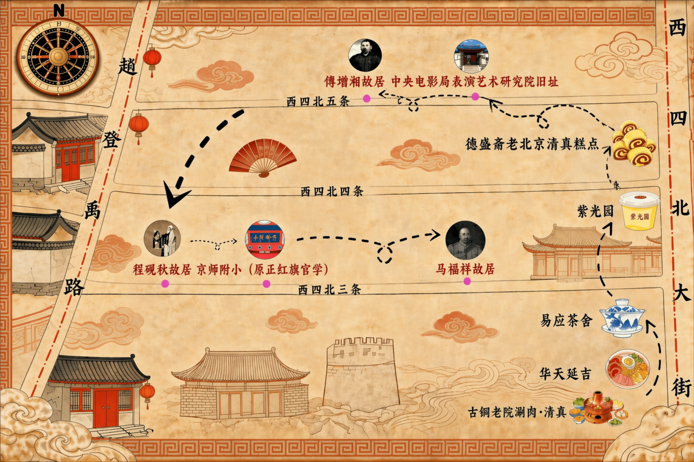
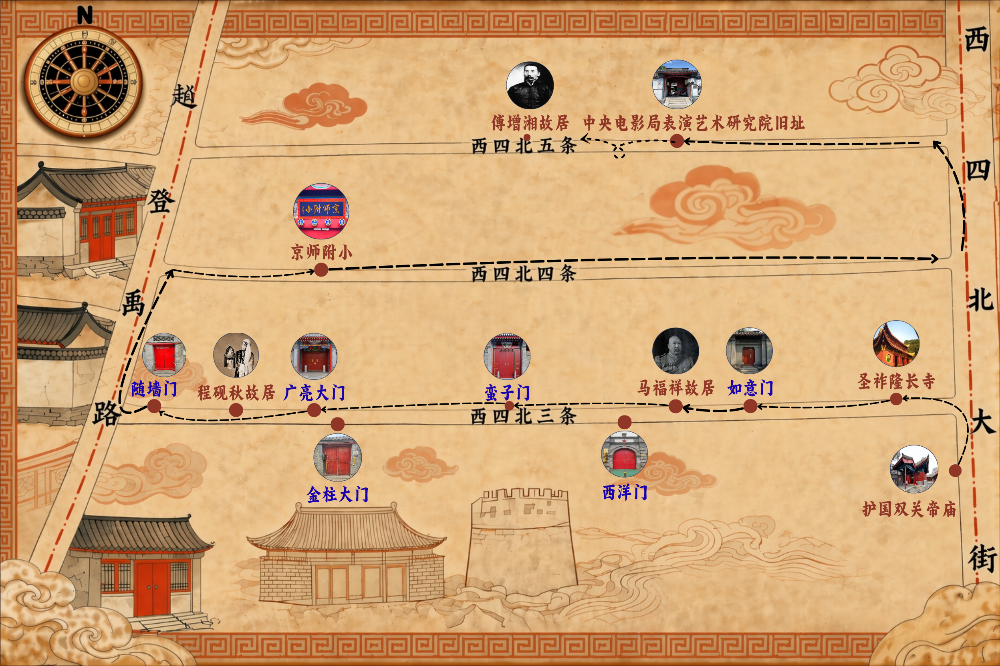
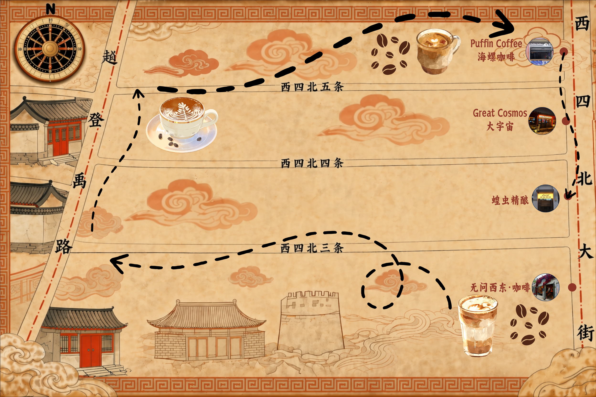

“京味烟火之旅”是一条融合老北京美食文化与胡同历史记忆的步行路线。从铜锅涮肉与朝鲜冷面的舌尖对决开始，到一壶清茶、几碟点心的悠然午后，再到老字号糕点铺的京味传承；浓缩了西四北街区七百余年的市井生活与人文底蕴。
欢迎您亲自走一趟，感受这座古都最真实的烟火气。

“人文寻踪线”是一条深度寻访胡同古迹的路线。从元代的信仰遗存，到明清的建筑规制，再到近现代的文人风骨——这条路线将为您揭开胡同“门第”等级的奥秘。
欢迎您亲自走一趟，开启这段跨越时空的人文寻踪。

“清享漫游线”是一条专为年轻人设计的“日咖夜酒”慢时光路线。从闹中取静的精品咖啡开启午后，漫步西四北原生胡同，最后以精酿小酌收尾。
在这里，适合与闺蜜一起，定格胡同里最轻盈的时光。
